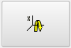
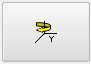
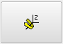
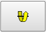
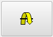

Rotate View Dialog Box
To access:
Use this dialog box to rotate the display area view. You have two possible frames of reference for rotation: the model itself or the viewer.
Objects
Field |
Description |
|---|---|
Angle |
The increment angle rotated for each button press. Default 90 degrees. |
Rotate Mode |
The frame of reference of rotation: the model or the viewer.
|
Model Rotate Mode Buttons: |
|
|
Rotate about the x-axis clockwise as viewed down the axis towards the origin. |
 - X Rotate |
Rotate about the x-axis anti-clockwise as viewed down the axis towards the origin. |
 + Y Rotate |
Rotate about the y-axis clockwise as viewed down the axis towards the origin. |
|
Rotate about the y-axis anti-clockwise as viewed down the axis towards the origin. |
|
Rotate about the z-axis clockwise as viewed down the axis towards the origin. |
 - Z Rotate |
Rotate about the z-axis anti-clockwise as viewed down the axis towards the origin. |
View Rotate Mode Buttons: |
|
 + Pitch Angle |
Pitch downwards. |
 - Pitch Angle |
Pitch upwards. |
|
Yaw left-to-right. |
|
Yaw right-to-left. |
|
Roll clockwise. |
- Roll Angle |
Roll anti-clockwise. |
 +
X Rotate
+
X Rotate -
Y Rotate
-
Y Rotate +
Z Rotate
+
Z Rotate +
Yaw Angle
+
Yaw Angle -
Yaw Angle
-
Yaw Angle +
Roll Angle
+
Roll Angle